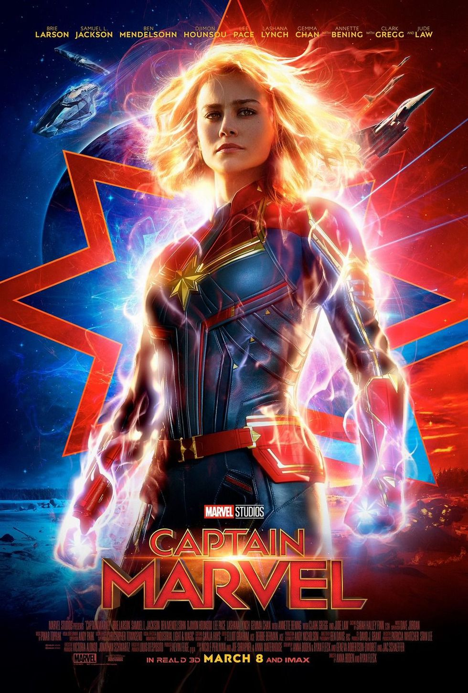

Capitán América: El primer vengador (Joe Johnston, 2011)
No es la primera película producida por Marvel pero sí que es la primera película que debes ver para poder entender la historia del Universo Cinematográfico de Marvel, ya que está ambientada en la Segunda Guerra Mundial. Sinopsis: Se centra en los primeros días del Universo Marvel, cuando Steve Rogers (Chris Evans) se ofrece voluntario para participar en un programa experimental que lo convierte en el super soldado conocido como Capitán América. Rogers se une a Bucky Barnes (Sebastian Stan) y Peggy Carter (Hayley Atwell) para hacer la guerra a los malvados de la organización HYDRA, dirigido por el villano Red Skull (Hugo Weaving).

Capitana Marvel (Anna Boden y Ryan Fleck, 2019)
La película es la historia de origen de Capitana Marvel, y no solo está ambientada en los años 90, sino que sentará las bases sobre todo lo que ocurre en la Fase 4. Cronológicamente, debes verla en este orden. Sinopsis: Situada en los años 90, la trama sigue las aventuras de Carol Danvers (Brie Larson), una poderosa guerrera que intenta mediar en un conflicto entre dos razas alienígenas que ha terminado llegando a la Tierra.
Iron Man (Jon Favreau, 2008)
La película que dio el pistoletazo de salida al Universo Cinematográfico de Marvel (UCM) y al cambio más grande en el cine de Hollywood. Conocemos a Tony Stark, que será el personaje sobre el que gire toda la franquicia hasta 'Vengadores: Endgame'. Sinopsis: Tony Stark (Robert Downey Jr.) se dedica a vender armas y lo tiene todo: dinero, poder, mujeres... Durante una demostración en Afganistán, un poderoso traficante lo captura. Gravemente herido (un fragmento de metralla está junto a su corazón), Stark se construye una armadura que le mantiene con vida y gracias a la cual escapa. Ya en USA, jura usar su nuevo traje para salvar a la gente.

Iron Man 2 (Jon Favreau, 2010)
Segunda aventura de Tony Stark y, aunque la crítica la vapuleó, fue un éxito de taquilla y nos presentó a la Viuda Negra de Scarlett Johansson, además de Máquina de Guerra con la cara de Don Cheadle. Sinopsis: Sometido a presiones por parte del gobierno, la prensa y la opinión pública para que comparta su tecnología con el ejército, Tony Stark (Robert Downey Jr.) es reacio a desvelar los secretos de la armadura de Iron Man porque teme que esa información pueda caer en manos indeseables. Con Pepper Potts (Gwyneth Paltrow) y James “Rhodey” Rhodes (Don Cheadle) a su lado, Tony forja alianzas nuevas y se enfrenta a nuevas y poderosas fuerzas.

Los Vengadores (Joss Whedon, 2012)
La culminación de la Fase 1 es esta epopeya con una de las peleas finales mejor coreografiadas de los últimos años. Empezamos a conocer las dinámicas de los personajes... y a Thanos, en la escena post-créditos. Sinopsis: Representa la reunión más espectacular jamás vista de superhéroes. Un enemigo inesperado amenaza con poner en peligro la seguridad mundial, así que Nick Fury (Samuel L. Jackson), director de la agencia internacional para el mantenimiento de la paz conocida con el nombre de S.H.I.E.L.D., necesita encontrar urgentemente un equipo que salve al mundo del mayor de los desastres.

Iron Man 3 (Shane Black, 2013)
La película que ayudó a forjar la relación entre Iron Man y Pepper Potts, además de para entender un poco más al atribulado Tony Stark después de los eventos ocurridos en 'Los Vengadores'. Sinopsis: Clausurados por el gobierno, los experimentos biológicos de Aldrich Killian (Guy Pearce) para perfeccionar humanos encuentran un mecenas en el Mandarín (Ben Kingsley). Pero sus oscuras intenciones encontrarán un enemigo: Iron Man (Robert Downey Jr.)

Thor: El mundo oscuro (Alan Taylor, 2013)
Esta película funcionaría perfectamente como independiente de todo el UCM, salvo por una cosa: conocemos una de las Gemas del Infinito, que en la película es denominada Éter. Sinopsis: 'Thor: El Mundo Oscuro' de Marvel es la continuación en la gran pantalla de las aventuras de Thor, el Poderoso Vengador mientras lucha por salvar la Tierra y los Nueve Reinos de un oscuro enemigo que es anterior al mismísimo universo.